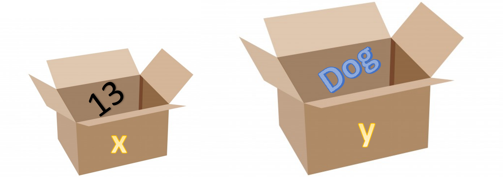

Coding is very much about passing information around and do something with that information. In Python we can easily import an Excel sheet, then we typically pass the Excel sheet around in the code and do some mathematical operations on the different columns. To pass data around in our code we use variables, below are two variables called x and y
x=13
y='Dog'
We use the equal sign, =, to create a binding between what is on the left and right side. Here we have assigned the value 13 and the string Dog to x and y, respectively. The value 13 (or the string Dog) is stored somewhere in the computer memory. In many ways you can consider the operation of creating a variable as to pick a box, put something in it, and labeling it, as illustrated in figure 3.
Figure 3: A visualization of a variable.

The illustration in figure 3 also indicate that the size of the box may vary dependent on the content. Note that x and y are labels, it does not matter what kind of label we use, it is the content of the box that is important not the label you put on it. Normally you would use a more descriptive name than x or y to simply help other humans to better understand your code.